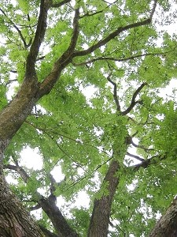
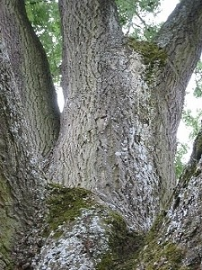

In alten nordischen Sagen wird die Welt als Baum beschrieben. Dieser Weltenbaum, Yggdrasil genannt, ist eine Esche.
Große alte Eschen sehen wirklich beeindruckend aus.


Sie können 250 bis 300 Jahre alt werden.
Auf Englisch heißt die Gemeine Esche European Ash.